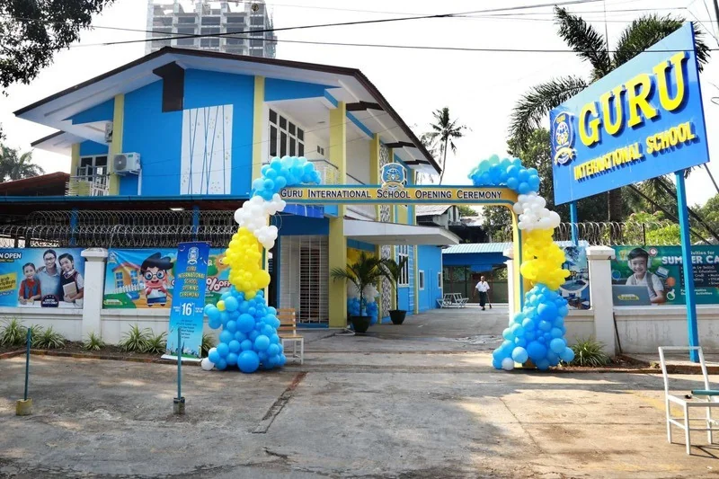
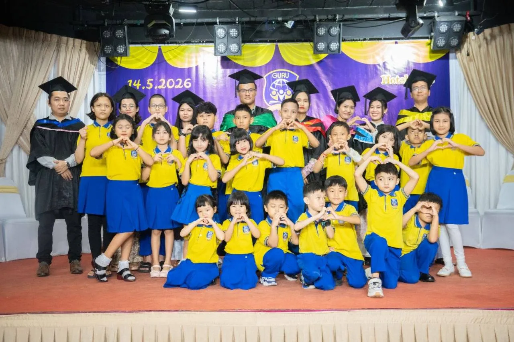

BIG DREAMS START HERE · YANGON
Little minds.
Big possibilities.
A place to wonder, a space to grow. We nurture curious, confident children who are ready to make their mark on the world.
Every Child, Every Dream,
Every Success.
 TODAY’S CURIOSITY. TOMORROW’S CONFIDENCE.
TODAY’S CURIOSITY. TOMORROW’S CONFIDENCE.dream
BIG.↗︎
YOUR NEXT DISCOVERY
There’s more to explore.

Our story
A school with heart.
Get to know Guru’s story, values and approach to nurturing curious, confident children.
Explore Our story ↗︎
Programmes
Find their next adventure.
Explore Guru’s early years and primary programmes, then talk with our team about the right next step for your child.
Explore Programmes ↗︎
Life at Guru
Every day, a discovery.
Explore learning, play, creativity and community in everyday life at Guru.
Explore Life at Guru ↗︎
Campus
Room to learn and grow.
Explore Guru’s classrooms, play spaces and facilities in San Chaung, Yangon.
Explore Campus ↗︎
Our people
Meet the people behind Guru.
Get to know the leadership and people guiding our school community.
Explore Our people ↗︎
Gallery
Explore Guru in pictures.
Browse school celebrations, learning spaces, graduation, trips and student activities.
Explore Gallery ↗︎
School news
Latest from Guru.
Read the latest published updates and announcements from our school team.
Explore School news ↗︎
Contact us
Let’s start a conversation.
Ask a question, discuss a programme or request a school visit. Leave your contact details so our admissions team can reply.
Explore Contact us ↗︎